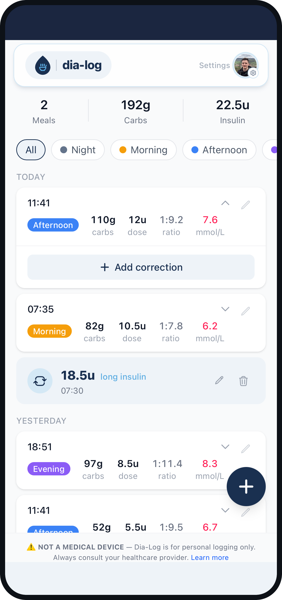

PWA / sensitive data / AI
Dia-Log
Быстрый дневник и поддержка расчёта дозы для диабета 1 типа
Мобильная PWA для логирования приёмов пищи, истории, коррекций и расчёта дозы на основе личного контекста.

Контекст
Для ежедневного сценария важны минимальное число действий, понятные расчёты и постоянный контроль пользователя над чувствительными данными.
Что сделал
Самостоятельно спроектировал продукт, UX, модель данных, API-интеграции, PWA-поведение и деплой. Учёл офлайн-доступ, синхронизацию между устройствами и прозрачное объяснение расчётов.
Эффект
В раннем тестировании время в целевом диапазоне выросло на 10-15 п.п.; логирование приёма пищи ускорилось в 4 раза.
Выбранные экраны
Дневник, ввод данных, расчёт и рекомендации